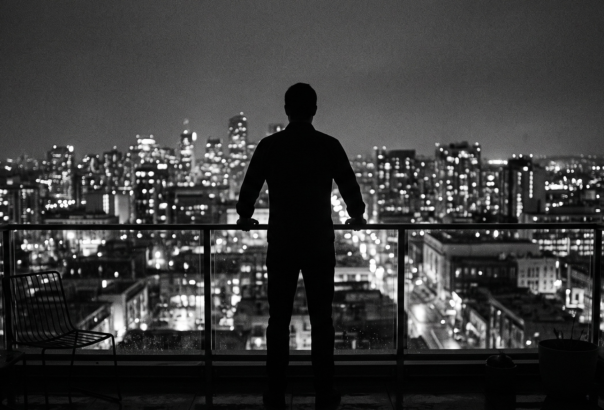

No te rompió la ruptura.
Te rompió lo que hiciste después para no perderla.
Esta no es terapia emocional.
Es reconstrucción mental para los hombres
que dejaron de reconocerse.
Dormís mirando el teléfono.
Prometiste no escribirle...
y terminaste haciéndolo igual.
Comés mal.
Pensás demasiado.
Te arrastrás por migajas emocionales.
Y lo peor...
No se trata de olvidarla.
Se trata de dejar de destruirte.
Silencio
Desintoxicación
Cortar Estímulos
Frenar persecución emocional
Mientras la seguís mirando,
seguís sangrando.
Sueño
Cuerpo
Rutina
Mente
El caos emocional
empieza en el cuerpo.
Dirección
Respeto
Presencia
Autoridad emocional
Volver a sentirte
HOMBRE.

Vos decidís cuál de los dos vas a ser
EMPEZÁ AHORA